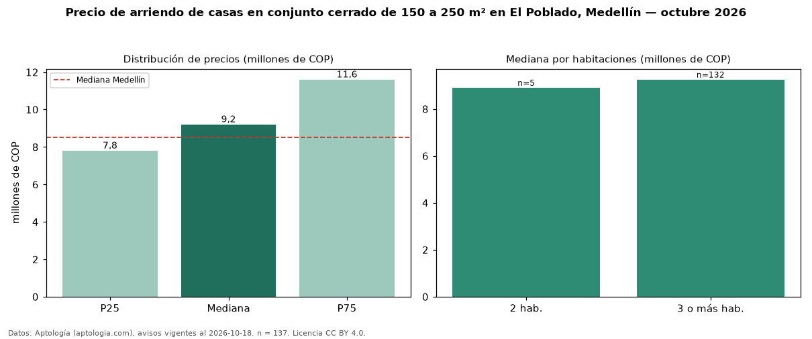

Precio de arriendo de casas en conjunto cerrado de 150 a 250 m² en El Poblado, Medellín — octubre 2026
Con 137 avisos vigentes, el canon mediano de casas en conjunto cerrado de 150 a 250 m² en arriendo en El Poblado, Medellín es COP 9,20 millones al mes. Eso es 22 % menos que la mediana de las casas en conjunto cerrado en arriendo de El Poblado (COP 11,80 millones, n = 541); este segmento reúne el 25 % de esos avisos. Por metro cuadrado, la mediana es COP 45.403/m² al mes (n = 132), 14 % por encima de las casas en conjunto cerrado en arriendo de El Poblado (COP 39.667/m²). El área mediana anunciada es 200 m². El segmento con más oferta es el de 3 o más habitaciones (132 avisos, mediana COP 9,25 millones); pasar de 2 habitaciones a 3 o más habitaciones cambia la mediana +4 %. El estrato más frecuente es 6 (91 % de los avisos con estrato). La mediana de todas las casas en arriendo de Medellín es COP 8,50 millones (+8 % de diferencia). La mitad central de los avisos va de COP 7,80 millones a COP 11,60 millones (razón 1,5), una dispersión moderada. Datos: Aptología (aptologia.com), CC BY 4.0 — https://www.aptologia.com/casas-en-arriendo/medellin/el-poblado. Archivos: PDF, CSV con las cifras y gráfica PNG.

| Avisos únicos | 137 |
|---|---|
| Percentil 25 | COP 7.800.000 |
| Mediana | COP 9.200.000 |
| Percentil 75 | COP 11.600.000 |
| Mediana por m² | COP 45.403 |
Fuente: avisos vigentes de portales inmobiliarios recopilados por Aptología, deduplicados (mínimo 30 avisos únicos por celda). Precios pedidos, no cerrados. Fecha: 2026-10-18.